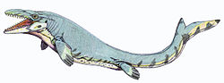
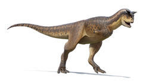
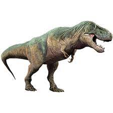

Mosasaurus Mosasaurus ("lagarto del río Mosa") es un género extinto de saurópsidos mosasáuridos que vivió durante el Maastrichtiense en el período Cretácico (era Mesozoica), hace entre 70-66 millones de años en el área de las actuales Europa Occidental, Norteamérica, Sudamérica y Antártida. Su nombre hace referencia al hecho de que el primer espécimen fue hallado cerca del río Mosa (río europeo de la vertiente del mar del Norte). El género Capelliniosuchus, alguna vez considerado como un crocodiliforme metriorrínquido, es un sinónimo más moderno de Mosasaurus.
Mosasaurus estuvo entre los últimos y mayores géneros de mosasaurios que se han hallado. La mayor especie conocida de este género es el Mosasaurus hoffmanni, el cual podía alcanzar los 18 metros de longitud.1 Siendo más largo que sus parientes americanos Tylosaurus, de 13,7 metros de longitud;2 y Hainosaurus, de 12,2 metros de longitud.3 Además, Mosasaurus era mucho más robusto que los mosasaurios tilosaurinos de longitud similar.
Como muchos mosasaurios, sus patas estaban modificadas en aletas hidrodinámicas, siendo las delanteras más grandes que las posteriores. El cráneo estaba más fuertemente constituido que en otros mosasaurios, ya que la mandíbula se articulaba muy apretadamente contra el cráneo. Tenía un cuerpo amplio en forma de barril, y con sus grandes ojos, pobre visión binocular y bulbos olfatorios mal desarrollados, los expertos creen que Mosasaurus vivía cerca de la superficie del océano, donde se alimentaba de peces, tortugas, amonitas, y posiblemente mosasaurios más pequeños. El animal permanecía cerca de la superficie y aunque era capaz de bucear, evidentemente prefería no aventurarse en aguas más profundas.El cráneo de Mosasaurus culminaba disminuyendo gradualmente en una breve punta cónica, y las mandíbulas estaban armadas con grandes dientes afilados y cónicos. Sus miembros en forma de aletas contaban con cinco dígitos en las frontales y cuatro en las posteriores. El tronco acababa en una fuerte cola dotada de aleta en su extremo, siendo el principal medio de locomoción del animal en el agua, más que sus aletas.
Al ser los mosasaurios depredadores más rápidos y mejor adaptados al medio acuático que los pliosauroideos, reemplazaron a estos a finales del Cretácico.
| |
|
 |
| |
 |
|